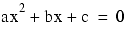
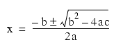

NOTE -- This program is in the file complx.cpp.
The roots of a polynomial are given by the formula:

The following function takes as input three double precision numbers, and returns the complex roots as a pair of values.
typedef std::complex<double> dcomplex;
std::pair<dcomplex, dcomplex> quadratic
(dcomplex a, dcomplex b, dcomplex c)
// return the roots of a quadratic equation
{
dcomplex root = std::sqrt(b * b - 4.0 * a * c);
a *= 2.0;
return std::make_pair( (-b + root)/a,
(-b - root)/a );
}